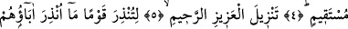
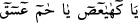

SEN ŞÜPHESİZ
PEYGAMBERLERDENSİN
Bismillâhirrahmânirrahîm
1. Yâsîn,
2. Hikmet dolu Kur’an hakkı için,
3. Sen şüphesiz peygamberlerdensin.
4. Doğru yol üzerindesin.
5. (Bu Kur’an) üstün ve çok merhametli Allah tarafından indirilmiştir.
6. Ataları uyarılmamış, bu yüzden kendileri de gaflet içinde kalmış bir toplumu
uyarman için indirilmiştir.
7. Andolsun ki onların çoğu cezâyı hak etmişlerdir. Çünkü onlar iman etmiyorlar.
“__WORD__ harfleri ya tek tek okunup söylenmek için sıralanmıştır ya da çoğunluğun
görüşüne göre sûrenin adı olup mahzuf bir mübtedânın haberidir. ‘Bu Yâsîn sûresidir’
demektir. Ya da gizli bir fiilin mef’ûlüdür.‘Yâsîn sûresini oku’ demektir. Yâsîn
harflerinin sûrenin adı olduğunu Peygamberimiz (s.a.)’in şu hadîsi teyid eder: “Allah
Teâlâ Âdem’i yaratmadan iki bin yıl önce Tâhâ ve Yâsîn sûrelerini okudu. Melekler
bu sûreleri işitince: “Bu sûrelerin kendilerine indirileceği ümmete ne mutlu! Bu
sûreleri okuyacak dillere ne mutlu! Bunları taşıyacak gönüllere ne mutlu!”
dediler.”[96]
Bir hadîste şöyle denilmiştir: “Hakk’ın dostları cennete ulaşınca Cenâb-ı Ceberût’tan
onlara: “Başkalarından çok işittiniz; Benden işiteceğiniz vakit geldi.” diye nidâ gelir.
Onlar da: “Bize (Kur’an) oku’ derler. Bunun üzerine Hak Teâlâ onlara Fâtiha, Tâhâ ve
Yâsîn sûrelerini okur. Hz. Mustafa (s.a.) şöyle buyurur: “İnsanlar Rahmân’ın
kendilerine okuduğu Kur’an’ı dinleyince sanki daha önce onu hiç duymamış gibi
olurlar.”[97] Nitekim Keşfü’l-esrâr’da böyle geçmektedir.
Bazıları hurûf-i mukattaanın Allah Teâlâ’nın isimleri olduğunu söylemiştir. Hz. Ali
(r.a.)’ın “__WORD__ diye duâ etmesi de buna delâlet eder. Bu durumda Yâsîn’e